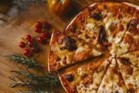

WELCOME TO AASTU BUSINESS PORTAL |
Room ReseravtionAll our guestrooms are elegantly furnished with handmade furniture include luxury en-suite facilities with complimentary amenities pack, flat screen LCD TV, tea/coffee making facilities,fan, hairdryer and the finest pure white linen and towels. Enjoy our elegant 40 m² guest rooms, designed in warm beige tones and tailored to the needs of private and business travelers alike. All rooms have a large marble bathroom, a double bed, air conditioning,an additional work area with free internet access and a walk-in closet. Our superior rooms impress with a wonderful view of the city and the adjacent park. The view from my hotel room window alone is worth the trip, and then there are all the little extras that make a stay at the Park Hotel so special. Regardless of whether you are on a business or private trip, I want you to feel completely at ease with me. And I can assure you, my designers went to great lengths to live up to this claim. Pizza delivery Pizza delivery is a great way for families and friends to celebrate together. DoorDash data shows that the ten most popular holidays for food delivery include Mother's Day, New Year's Eve, Halloween, Thanksgiving Eve, Veteran's Day, Labor Day, Father's Day, Memorial Day, Indigenous Peoples' Day, and Black Friday — so launching marketing campaigns tailored to these dates can have powerful payoffs. For example, pizza delivery orders on DoorDash were up over 27% on Halloween 2019 compared to the average Friday in October (making this a scary good day for promotions). Beyond promoting pizza-related holidays, find creative ways to celebrate your signature dishes all year long. Take National Margarita Day (February 22), for instance. The holiday may be referring to the famous cocktail, but why not use a clever play on words to celebrate your classic margherita pie — or take things one step further by offering a "Margherita & Margs" promo? SVG descriptionPizza delivery is a great way for families and friends to celebrate together. DoorDash data shows that the ten most popular holidays for food delivery include Mother's Day, New Year's Eve, Halloween, Thanksgiving Eve, Veteran's Day, Labor Day, Father's Day, Memorial Day, Indigenous Peoples' Day, and Black Friday — so launching marketing campaigns tailored to these dates can have powerful payoffs. For example, pizza delivery orders on DoorDash were up over 27% on Halloween 2019 compared to the average Friday in October (making this a scary good day for promotions). Beyond promoting pizza-related holidays, find creative ways to celebrate your signature dishes all year long. Take National Margarita Day (February 22), for instance. The holiday may be referring to the famous cocktail, but why not use a clever play on words to celebrate your classic margherita pie — or take things one step further by offering a "Margherita & Margs" promo? |
| do you have feedback? |